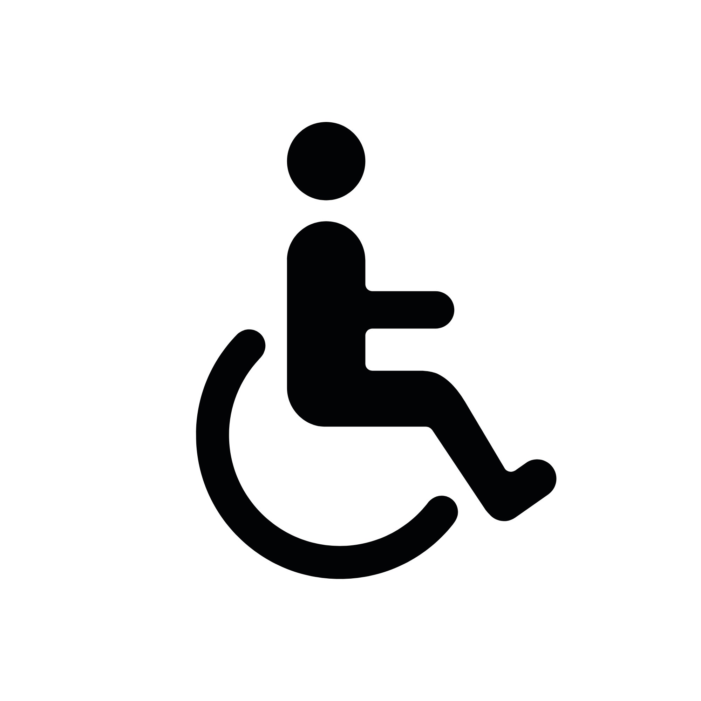

שיטה מתקדמת, מדויקת ואפקטיבית
לשחרור טראומות וחרדות מהשורש, דרך תת המודע.
בלי כדורים ובלי תהליכים אינסופיים.
ניסית שיחות. קראת ספרים. עבדת עם עצמך.
אולי גם לקחת כדורים.
היו רגעים של הקלה. אבל זה תמיד חזר.
פתאום הכל לוחץ ואין אוויר
את נמנעת, מתכווצת, מוותרת
כאילו זה קרה אתמול
גם כשאת יודעת שזה לא משרת אותך
והשאלה הכי קשה:
למה אני משקיעה ומתאמצת כל כך הרבה,
ועדיין דורכת במקום?
הסיבה שכלום לא השתנה עד עכשיו,
היא כי את ניגשת אל המקום הלא נכון.
המוח שלך מחולק לשני חלקים עיקריים:
כוח הרצון. החלק האנליטי. החלק שאומר "אני רוצה שינוי". זיכרון לטווח קצר. חשיבה הגיונית. כל דבר שאת מודעת אליו עכשיו.
כל השאר. ההרגלים שלך. הרגשות שלך. התגובות האוטומטיות. הטראומות. הפחדים. הדפוסים שחוזרים על עצמם. הדרך שאת יושבת ונושמת עכשיו.
והנה הבעיה:
החרדות, הפחדים, הטראומות
הם לא יושבים במודע שלך.
הם יושבים בתת המודע.
אז גם כשאת ממש רוצה,
או כשאת מנסה "לחשוב אחרת"
את פועלת עם 5% מהמוח
על בעיה שיושבת ב-95% האחרים.
זה כמו לנסות לכבות שריפה ביער עם כוס מים.
זה מה שקורה במצב טראנס
טראנס זה מצב נוירולוגי טבעי שאת חווה כל יום,
כשאת שקועה בספר, כשאת נוהגת בכביש מוכר ופתאום מגיעה ליעד בלי לזכור את הדרך,
רגע לפני שינה.
המוח עובר לגלי אלפא ותטא שהם גלים חשמליים איטיים יותר.
הפעילות בקליפת המוח הקדם-מצחית יורדת.
המנגנון ההגנה מרפה את האחיזה.
הדלת אל תת המודע מתחילה להיפתח.
אפשר לגשת לזיכרונות ולרגשות תקועים, לעדכן את המידע ההישרדותי וללמד את המוח שהסכנה חלפה.
לכתוב מחדש את התגובות האוטומטיות.
השינוי לא קורה במודע.
הוא קורה בתת המודע.
ולכן הוא קבוע.
לחיות בלי שהחרדה מנהלת לך את החיים, בלי שהפחדים מגבילים אותך.
לשחרר את הכאב מהעבר, למצוא חופש.
לשבור את התגובות האוטומטיות שחוזרות על עצמן.
תחושה של רוגע ושלווה שנובעת מתוכך. מקום שקט שאת יכולה לחזור אליו.
להרגיש שאת יכולה להתמודד עם החיים, לסמוך על עצמך.
לישון בלי סיוטים, בלי נדודי שינה, בלי התעוררויות באמצע הלילה.
לפרוץ דפוסים ישנים וליצור חיבורים בריאים יותר.
שנים חייתי בתחושה שהכול מסודר ונוצץ כלפי חוץ, אבל בפנים משהו תמיד הרגיש ריק. הקריירה הייתה ברורה, המסלול היה מסומן, ההישגים הצטברו, ובכל זאת חזרה שוב ושוב תחושה עמוקה שמשהו מהותי חסר, גם כשכל הסימנים החיצוניים העידו על הצלחה ותפקוד.
במשך 20 שנים פעלתי בעולם המדעי כדוקטור לביולוגיה במכון ויצמן, ובהמשך המשכתי לתעשיות הפודטק והביוטק. זה היה עולם מסודר, מדויק, מבוסס היגיון, מחקר ומבנים ברורים. אהבתי את החשיבה ואת הדיוק, ובמקביל היה ברור שקיים רובד פנימי עמוק יותר שאינו מקבל שם מענה, רובד שאינו נענה דרך תארים, תפקידים או התקדמות מקצועית.
לפני כ-15 שנים יצאתי למסע אישי עמוק. פגשתי פסיכולוגיה, אימון וכלים רגשיים שונים, ובהמשך העמקתי גם בהכשרות אינטנסיביות וממוקדות בהיפנותרפיה, היפנוזה, טראנס וסוגסטיה טיפולית, לצד טכניקות מתקדמות לגישה ישירה אל תת המודע, חקרתי והתנסיתי, חיפשתי תנועה פנימית והקלה. המפגש עם תהליכים בתת המודע סימן נקודת מפנה עבורי. שם התאפשרה הגעה ישירה אל השורש, ושם נוצרה פרשנות מחודשת לחוויות הראשוניות שנצרבו אצלי. פרשנות שאפשרה שחרור דפוסים ושינוי קצר, ממוקד שנשאר קבוע.
את הדרך הזו עברתי בעצמי, לעומק. ההתנסות האישית, יחד עם למידה והעמקה, יצרו את הבסיס שממנו ניתן להוביל אחרים מתוך דיוק, נוכחות ואחריות. כיום אני משלבת חשיבה מדעית ונוירולוגית, כלים תודעתיים עמוקים וניסיון אישי שנולד מתוך תהליכים בתת המודע עצמו. כך נוצרה גישה שמגיעה אל השורש, מאפשרת פרשנות מחודשת במקום שבו הדפוסים נוצרו, ומשם מתרחש השחרור והשינוי שנשאר.
אני מאמינה שלכל אדם קיימת יכולת טבעית לשינוי. תת המודע כבר מכיר את הדרך. התפקיד שלי הוא ליצור מרחב מקצועי ובטוח שמאפשר מפגש עם השורש ושחרור של מה שסיים את תפקידו, דרך תהליך אנושי, חם ובהיר, שמורגש בעומק וגם בחיים עצמם.
אני בעצמי עברתי שנים של חיפוש אחרי הטיפול שיעזור לי. ובלי לשאול שאלות, הייתי צריכה לשלם אלפי שקלים על תהליך.
היום, אני לא מוכנה למכור תהליכים לאנשים שאני לא יודעת אם זה מתאים להם.
המפגש הראשון במחיר של פיצה משפחתית, זו ההזדמנות שלך לחוות את השינוי.
כן, לחלוטין. טראנס הוא מצב טבעי שאת חווה מדי יום, כשאת קוראת ספר ומתעמקת בו עד שאת לא שומעת את הסביבה, כשאת צופה בשקיעה ומתבוננת בה בצורה חולמנית, כשאת עובדת על משהו ושעות עוברות מבלי ששמת לב, או כשאת מאזינה למוזיקה ומתעמקת בה. במהלך המפגש את בשליטה מלאה, שומעת כל מילה, ויכולה לבחור איך להגיב.
זו יכולת טבעית להיכנס לטראנס. יש אנשים שנכנסים לטראנס בקלות ומהר, ויש כאלו שלוקח להם קצת יותר זמן להרגיש בנוח עם התהליך. זה לא תלוי בכישרון מיוחד או ביכולת מסוימת, זה פשוט תהליך טבעי שהמוח שלך יודע לעשות.
חד משמעית לא. את נמצאת בשליטה תמיד. טראנס הוא ריכוז ומיקוד פנימי גבוה, את שומעת כל מילה, מודעת למה שקורה, ויכולה לבחור איך להגיב.
זה משתנה מאדם לאדם. יש אנשים שמרגישים שינוי כבר במפגש הראשון, ויש כאלו שהשינוי מתחיל להיות מורגש אחרי מספר מפגשים. רוב האנשים רואים שינוי משמעותי תוך 5-8 מפגשים.
כן, חד משמעית. השינוי קורה בתת המודע, ברמה הנוירולוגית והרגשית העמוקה של המוח. כשאנחנו משנים דפוסים, אמונות ותגובות ברמה הזו, הם נשארים. זה לא שינוי זמני או שטחי, זה שינוי קבוע שמוטמע במערכת ההפעלה של המוח שלך.
זה תלוי בעומק הטראנס. בטראנסים עמוקים יש לרוב ערפול בזיכרון, וזה בדיוק מה שאנחנו רוצות, כי שם מתרחשת העבודה העמוקה ביותר.
חשוב מאוד שתגידי לי אם משהו מפריע או לא מרגיש טוב בכל רגע נתון. ברגע שאת מספרת לי, אני עושה לך ניקוי רגשי ואחרי זה אנחנו ממשיכות הלאה, בכדי שתמיד תצאי מהמפגש עם חיוך.
השאירי פרטים ואחזור אליך לשיחת ייעוץ ללא עלות
